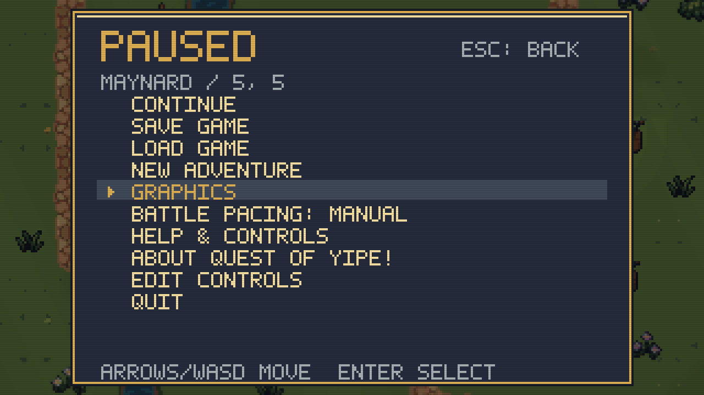
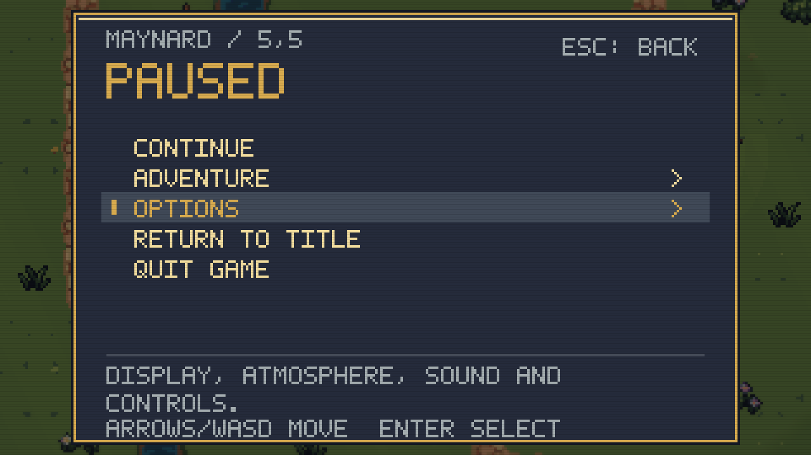
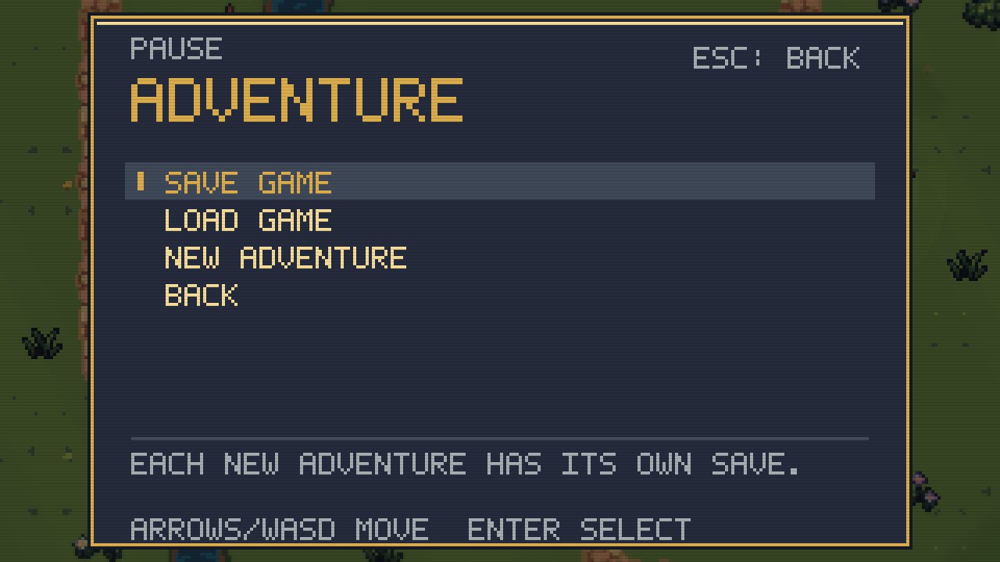
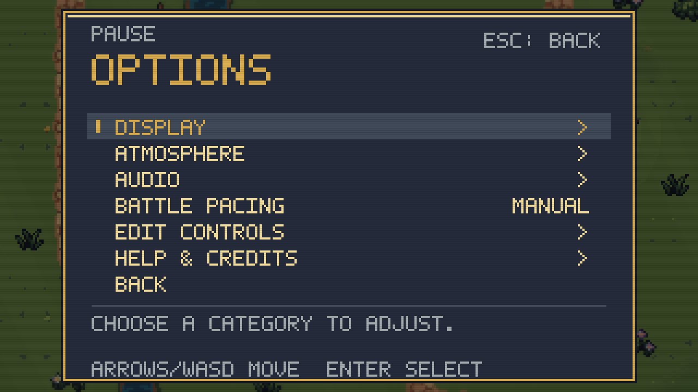
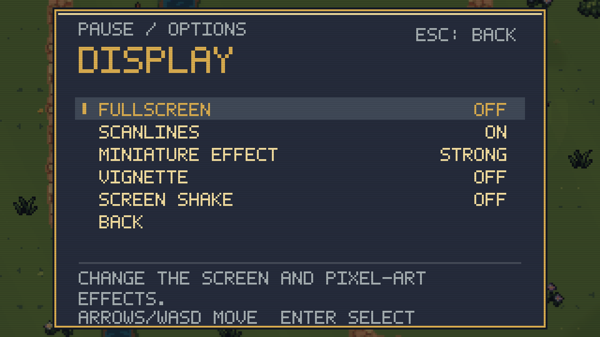
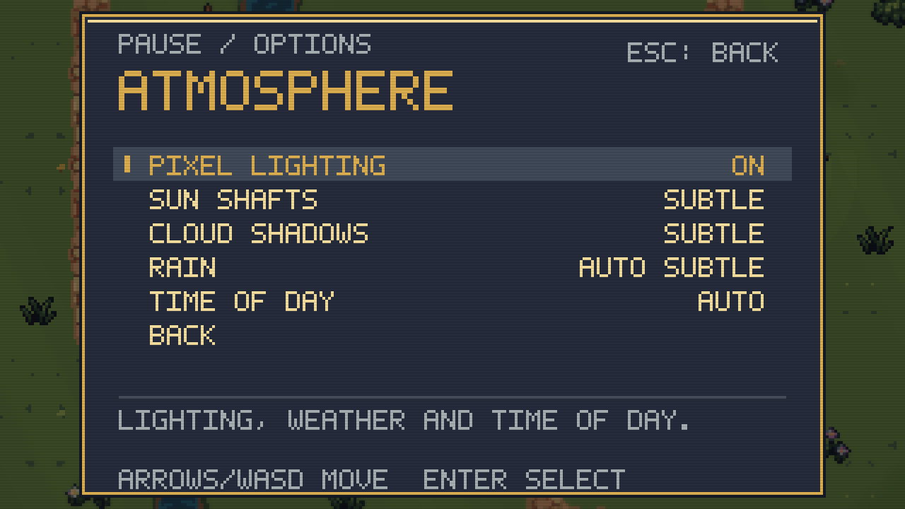
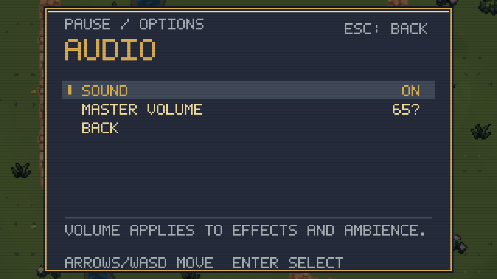
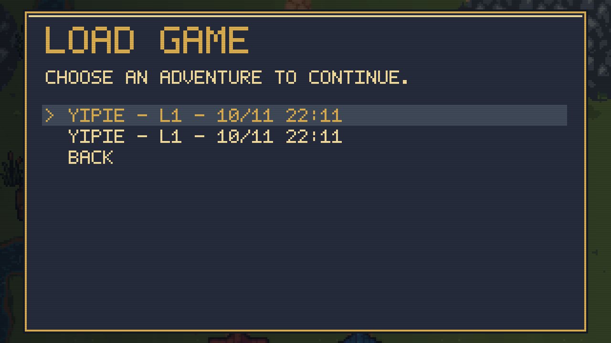
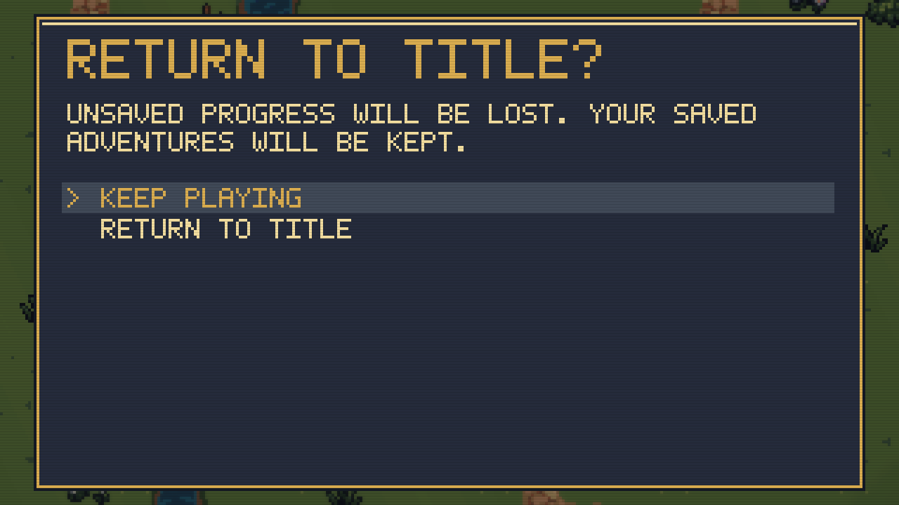
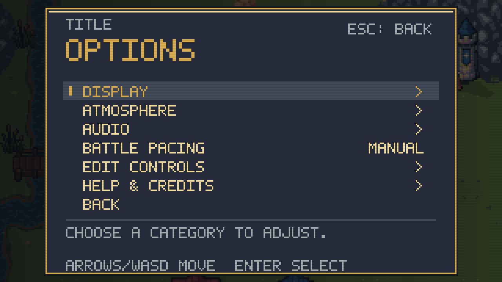

Title screen & organized menus
A traditional title over animated Maynard scenery. Shared Options pages organize display, atmosphere, audio, battle pacing, controls and credits. New adventures receive separate save destinations.
32 seconds: eight seconds of title animation, then menu captures. These are game-rendered views from an isolated test adventure.
Before and after, plus the new pages

Previous pause menu
New pause menu
Adventure actions
Options categories
Display
Atmosphere
Audio
Choose a saved adventure
Return to title
Options from the titleLocal Release: 632 core checks, 4,059 full graphics checks and 89 final focused menu checks passed. All 33 personal files are unchanged. Verification details · Open video · Title screenshot.